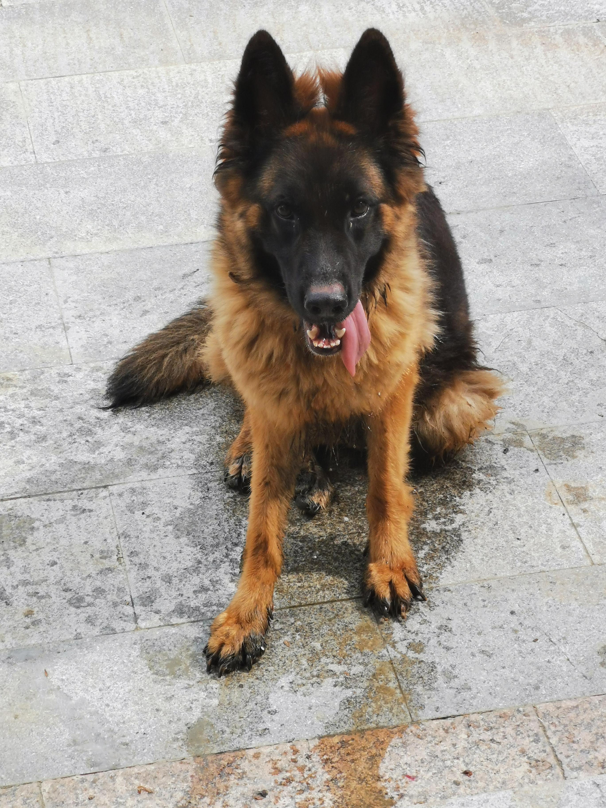
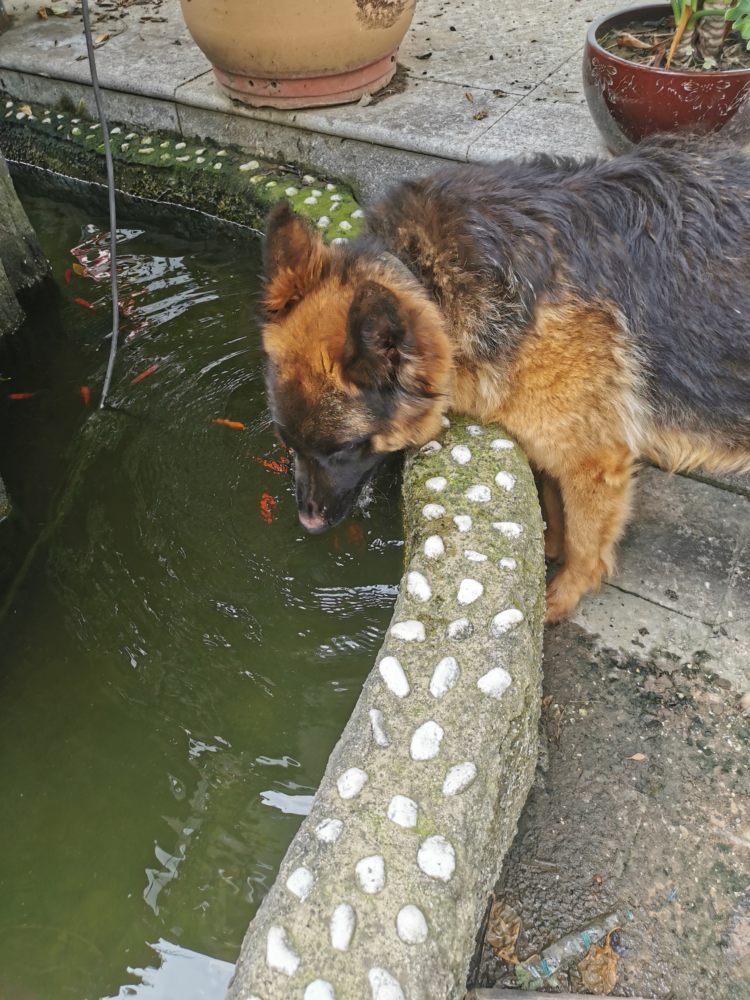

Introducing My Dogs!
my dog
 I have a dog named Lucky, a German Shepherd who came to our home in 2018. He was fostered at my grandma's house most of the time. He loves chewing bones and drinking from the fish tank even though we have a cup for him. He is always running around, often running out as soon as the door opens. But will be back soon. But I rarely see him anymore because I only go home once a year.